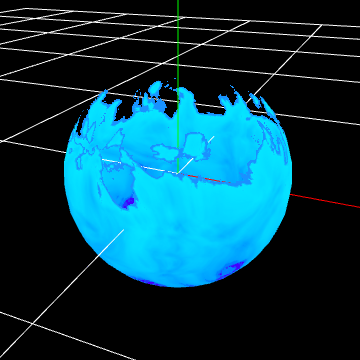

03. Toon-like flames with sequential materials.¶
Overview¶
In the previous chapter, we created a toon-like flame. However, the parameters are all included in the material and cannot be used interchangeably. Also, it plays continuously and does not disappear in the middle. In this chapter, the flames from the previous chapter will be made available for general use.
Effects to be created in this chapter
Create¶
In this chapter, we will make changes based on the effects we created in the previous chapter. For the sake of clarity, we have changed the lifetime of the particles.
Parameters¶
Effekseer's materials have a node called Parameters. This node, called Parameters, allows you to change the parameters of the material from the Effekseer.
First, to be able to edit the color of the effect from outside, we will replace the gradient image with a parameter.
Add a Parameter Image Node.
Then, connect it to the Sample Image Node.
Enter a name for the parameter node.This name will appear in Effekseer and will be used to associate the image with the one configured in Effekseer. Therefore, try not to change it too much. This time, since we are replacing a gradient, we will name it Gradation.
Set the image to Textures/Gradation2.png as the default value.
Effekseer now also shows the gradient parameters. Since the default image will still be displayed, we will set a new image.
This time, set Textures/Gradation4.png here.

The image of the effect has been replaced.
In this case, I tried to replace the texture, but you can also use numerical values as parameters.
Let's set the speed at which the image flows as a parameter.
Add a Parameter 2 Node.
Set the name to Speed.
Set the default parameter to (0.1,0.1).
Then connect it to the Moving UV Node 's Speed.
The Effekseer will display the speed and you can change the value.

Changing the value will change the speed. In this case, the default value is fine, so we will leave the value at (0.1,0.1).
These can be set externally without having to embed the parameters in the material.
Custom Data¶
As it is, you have just externalized the parameters, but the flame is still flowing continuously. Custom data can be used to set the beginning and end.
In this case, we will specify a node called Custom Data. This node is similar to a parameter, but allows you to set a different value for each particle in the effect, and also allows you to set the You can also set the F-curve and other parameters.
This time, we will extinguish the flames by moving the gradient map.
Shifts the referenced position of the gradient by an external parameter to achieve a fade-out.
Makes the gradient image transparent by moving it in the direction it will become transparent.
First, we will add CustomData 1 Node.
And since it is UV, connect it to RG.
Then, set custom data from Effekseer's Basic Render Settings panel. In this case, we will use the F-curve since we will be moving the UVs to achieve the fade in and out.

Set the R value in the F-Curve to be -1 when it is off and 0 when it is on display.
-1 to refer to the upper part of the gradient image. This means that the image will disappear.

Then the effect will now fade in and out.
Finally, we have made the effects created in this chapter available for download.
Summary¶
This time I created a variation of the flame. Creating a material for each effect is a lot of work, so it is important to create a generic material that can be used in many different ways.